Giảm thiết bị trung gian
GPON ONT được tích hợp sẵn, không nhất thiết phải có thêm ONT của ISP khi hạ tầng cho phép thay thế.
DrayTek ONT Vigor1100ax
Gộp GPON ONT, Router Wi-Fi 6 và Dual-WAN vào một thiết bị. Giảm tầng kết nối, chủ động phân phối lưu lượng và giữ hệ thống vận hành linh hoạt khi đường truyền gặp sự cố.
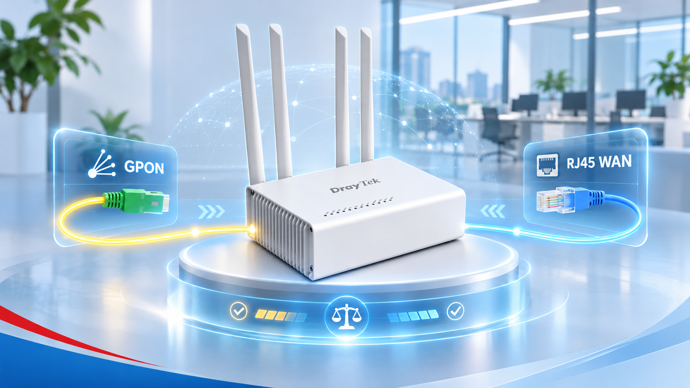
Không chỉ là router phát Wi-Fi. Vigor1100ax giúp doanh nghiệp sắp xếp lại cách kết nối, vận hành và bảo vệ hệ thống mạng.
GPON ONT được tích hợp sẵn, không nhất thiết phải có thêm ONT của ISP khi hạ tầng cho phép thay thế.
Phân phối nhiều phiên kết nối qua GPON và WAN RJ45, đồng thời có phương án dự phòng.
Phân tích Latency, Jitter, Packet Loss để định tuyến phù hợp với ứng dụng và ngưỡng SLA.
Wi-Fi 6, VLAN, Firewall, VPN và định tuyến trên cùng một nền tảng DrayOS 5.
Vigor1100ax tích hợp GPON ONT ngay trong router. Thay vì cáp quang → ONT → Router, doanh nghiệp có thể kết nối trực tiếp GPON vào Vigor1100ax, sau đó cấp mạng cho LAN và Wi-Fi.
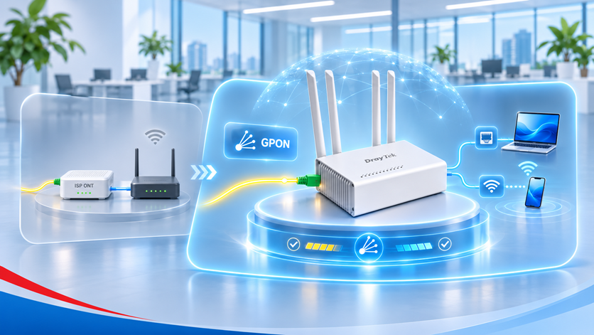
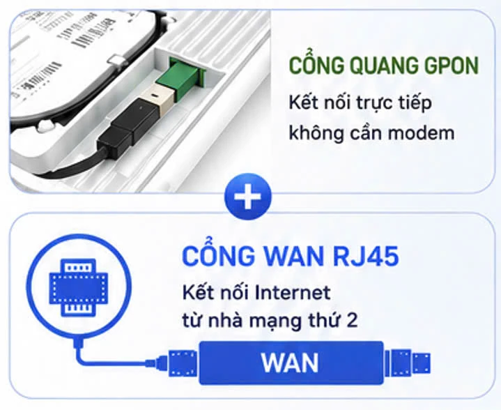
GPON: kết nối quang trực tiếp với nhà mạng. WAN RJ45: kết nối Internet Ethernet từ ONT hoặc thiết bị mạng thứ hai.
Ảnh tham khảo do AN PHÁT cung cấp.Khi có nhiều thiết bị và nhiều phiên truy cập đồng thời, chia tải đúng cách giúp tận dụng hiệu quả hai nguồn kết nối.
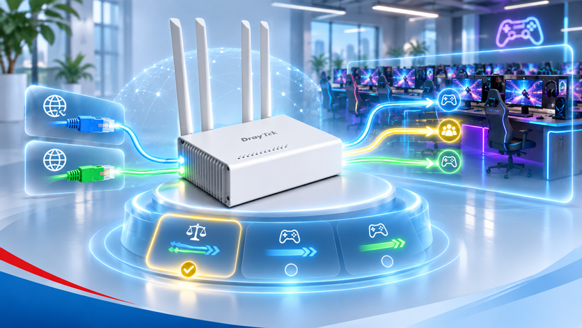
Phân phối nhiều phiên kết nối qua hai WAN theo chế độ và chính sách cấu hình.
Tuyến dự phòng được sử dụng khi đường chính mất kết nối hoặc không đạt điều kiện theo cấu hình.
Quyết định dịch vụ nào được đi qua WAN nào; chọn đường theo nhu cầu ứng dụng.
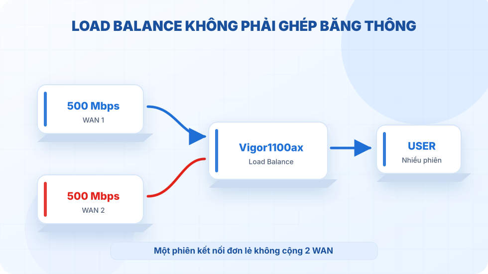
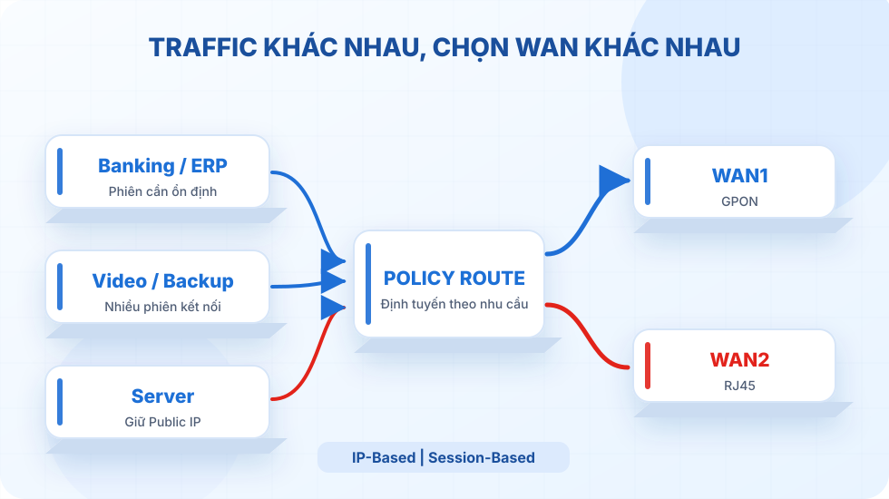
Policy Route giúp IT xây dựng quy tắc theo nhóm lưu lượng, lựa chọn WAN phù hợp và kiểm soát tính ổn định của phiên kết nối.
Ví dụ: ghim dịch vụ ngân hàng hoặc server vào một WAN; sử dụng hai WAN cho lưu lượng download/backup theo thiết kế cụ thể.
Không phải cứ “Connected” là họp video sẽ mượt. Với SLA, thiết bị có thể đánh giá chất lượng mỗi tuyến theo các tiêu chí kỹ thuật trước khi quyết định đường truyền.
Trên DrayOS 5.4.0, có thể cấu hình Link Health Check, Performance SLA và lựa chọn Failover by: SLA Profile trong Policy Route.
Tham khảo mô hình Policy Route theo SLA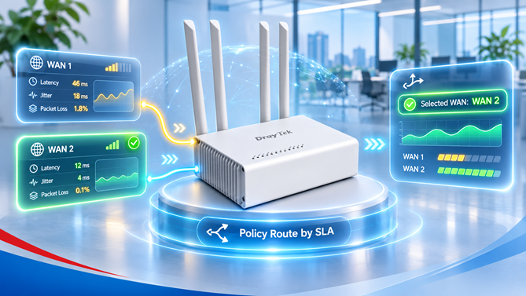
Ngưỡng và giá trị minh họa, không phải mặc định của thiết bị.
Wi-Fi 6 (802.11ax) hai băng tần, MU-MIMO, bốn anten cố định và các chức năng quản lý SSID cho môi trường doanh nghiệp nhỏ.
Tốc độ liên kết lý thuyết, không phải tốc độ Internet thực tế. Số lượng client vận hành phù hợp thay đổi theo ứng dụng, lưu lượng và môi trường sóng.
Những tính năng trực quan để khách hàng và đội ngũ kỹ thuật cùng hình dung mô hình triển khai.
Hỗ trợ WireGuard, IPsec, OpenVPN, SSL VPN và các giao thức VPN khác. SSL VPN được bổ sung từ firmware 5.4.0.
SSL VPN: 16 kênh theo tài liệu nguồnDùng Port-Based/Tag-Based VLAN và Firewall để tách luồng truy cập nội bộ, CCTV và khách; quy tắc kiểm soát tùy cấu hình.
Staff / CCTV / GuestSPI Firewall, Object-Based Policy, CSM và kiểm soát theo IP/MAC/Subnet giúp quản lý kết nối theo nhu cầu doanh nghiệp.
SPI / Object / CSMCó thể thiết kế một sợi GPON nhiều VLAN hoặc dùng GPON cho mạng riêng và RJ45 cho Internet, theo khả năng dịch vụ ISP.
GPON / 802.1Q / Policy RouteThông qua IPv4 Alias, kỹ thuật viên có thể cấu hình các Gateway tương ứng với chế độ chia tải hoặc chỉ định từng WAN, từ đó xây dựng giải pháp chủ động chọn tuyến cho phòng NET.
192.168.1.3Gateway chính → Load Balance192.168.1.1Alias → chỉ WAN1192.168.1.2Alias → chỉ WAN2IP là ví dụ. Cần gắn đúng Interface WAN khi cấu hình IPv4 Alias và kiểm tra chính sách định tuyến thực tế.
Thiết kế mạng theo nhu cầu sử dụng, không chỉ theo số lượng cổng hay tốc độ đường truyền.
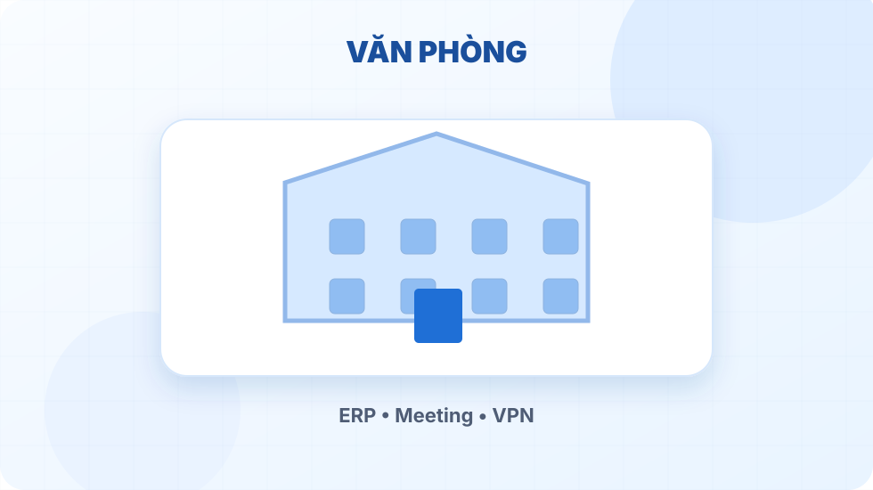
Họp trực tuyến, ERP, VPN, phân bổ Internet theo nhóm dịch vụ.
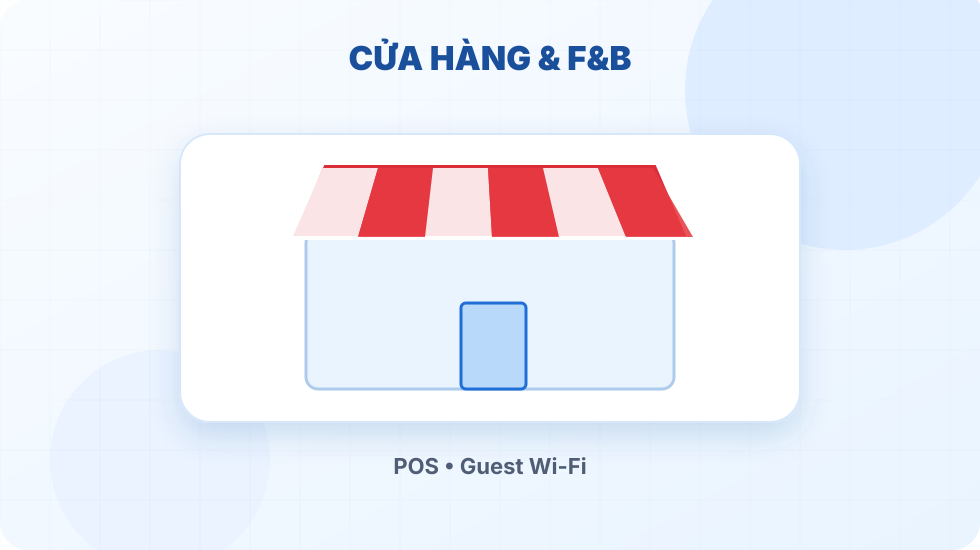
Wi-Fi nhân viên/khách, thiết bị POS, kết nối gọn nhẹ.
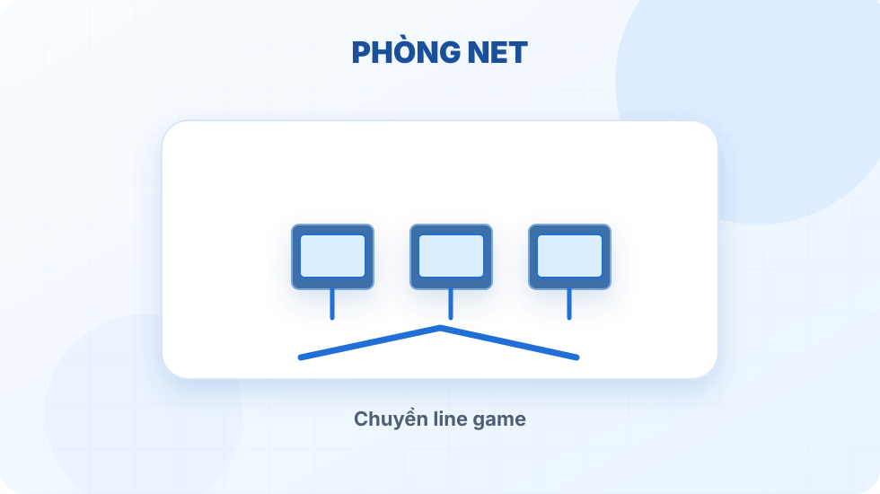
Hai đường Internet, nhiều Gateway, chính sách chọn line theo nhóm máy.
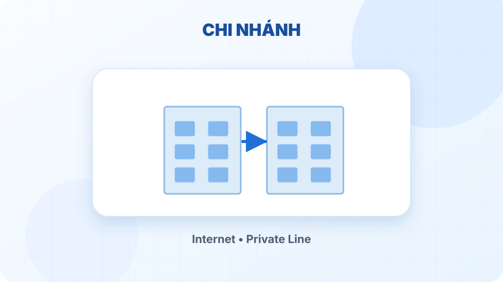
Internet, mạng riêng, quản trị tập trung và VPN liên kết hệ thống.
Bảng thông số tham chiếu từ tài liệu Vigor1100ax ngày 10/11/2026. Hiệu năng và tính tương thích cần xác nhận theo firmware, ISP và mô hình tải thực tế.
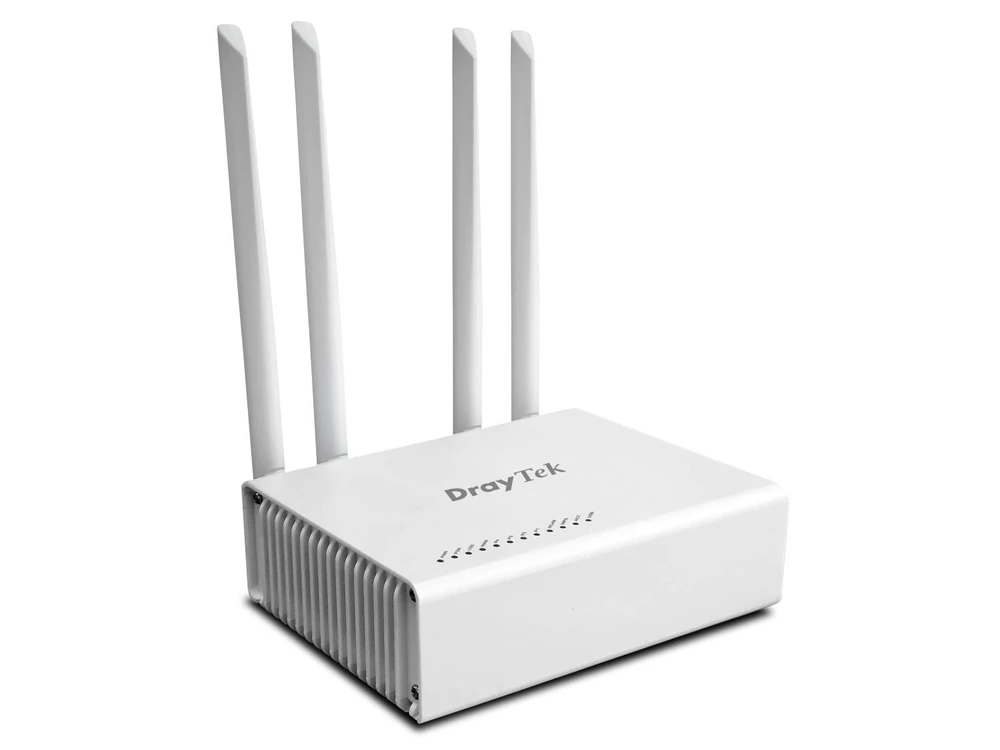
Nhờ AN PHÁT tư vấn cấu hình| GPON ONT | Class B+, SC/APC; PON RX 2.488 Gbps / TX 1.244 Gbps |
|---|---|
| Cổng WAN | GPON tích hợp + 1 × RJ45 Gigabit Ethernet |
| Cổng LAN | 4 × Gigabit Ethernet |
| Wi-Fi | Wi-Fi 6 AX3000 · 2.4 GHz 574 Mbps · 5 GHz 2402 Mbps · 4 anten |
| Dual-WAN | Load Balancing, Failover (firmware 5.4.0) |
| Policy Route | IP-Based / Session-Based; Failover theo Interface Offline hoặc SLA Profile |
| VPN | WireGuard, IPsec, OpenVPN, SSL VPN, L2TP, EasyVPN |
| SSL VPN | 16 kênh theo tài liệu nguồn · yêu cầu firmware 5.4.0 trở lên |
| Bảo mật | SPI Firewall, Object-Based Firewall, CSM |
| VLAN | Port-Based / Tag-Based, Multiple Subnet |
| NAT | Thông lượng khoảng 1 Gbps · khoảng 50.000 phiên NAT |
| Khác | 2 × USB · IPv6 · DHCP · Static Route |
| Giới hạn cổng | Không có cổng Ethernet 2.5GbE |
Chúng tôi ưu tiên cấu hình đúng ứng dụng và điều kiện đường truyền hơn lời hứa hiệu năng quá mức.
Thiết bị tích hợp GPON ONT, có thể cắm cáp quang trực tiếp. Tuy nhiên việc thay thế ONT còn phụ thuộc OLT, GPON SN, SLID/mật khẩu PON, VLAN dịch vụ và chính sách của nhà mạng.
Không. Load Balancing phân phối nhiều phiên hoặc nhóm traffic qua hai WAN; một phiên TCP tải file riêng lẻ không tự ghép băng thông hai đường. NAT throughput công bố của router khoảng 1 Gbps.
Failover thông thường tập trung vào trạng thái WAN khả dụng hay mất kết nối. SLA kết hợp Link Health Check với Latency, Jitter và Packet Loss để đánh giá chất lượng và chuyển hướng theo ngưỡng cấu hình.
Có theo tài liệu nguồn. Vigor1100ax hỗ trợ WireGuard và các phương thức VPN khác; SSL VPN được bổ sung ở firmware 5.4.0, mức 16 kênh được ghi nhận trong tài liệu nội bộ và cần đối chiếu thông số chính thức trước khi cam kết cho dự án.
Có thể xây dựng mô hình như vậy, hoặc một GPON mang nhiều VLAN dịch vụ, tùy khả năng cung cấp của ISP và chính sách định tuyến/cấp quyền triển khai.
Không. Đây là router Wi-Fi 6 AX3000 và các cổng Ethernet thuộc chuẩn Gigabit. Nếu cần Wi-Fi 7 hoặc Multi-Gig, nên chọn model khác.
Cho chúng tôi biết ISP đang sử dụng, số lượng đường Internet, thiết bị đầu cuối và nhu cầu VPN/VLAN. Đội ngũ kỹ thuật AN PHÁT sẽ tư vấn mô hình phù hợp trước khi báo giá.
Chọn cách thuận tiện nhất để đội ngũ kỹ thuật hỗ trợ.